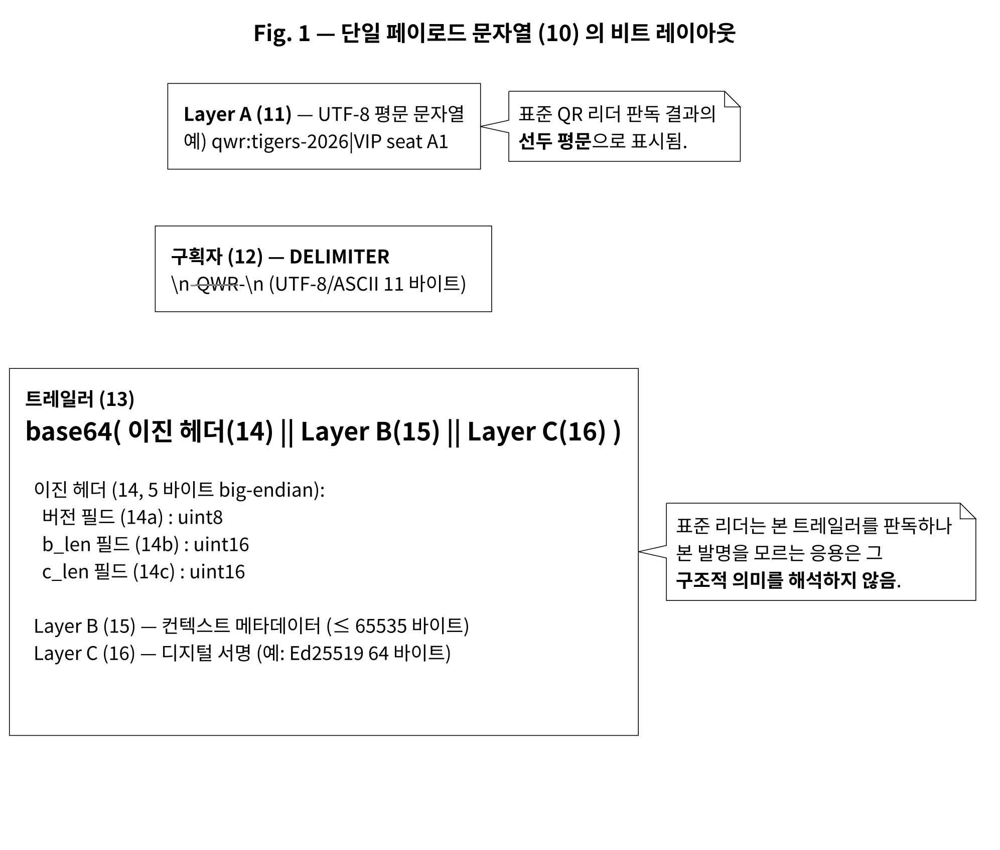
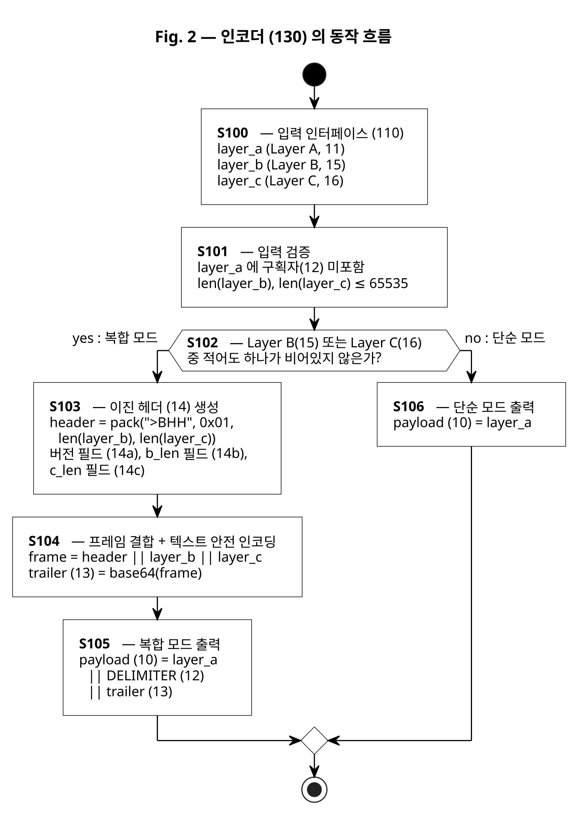
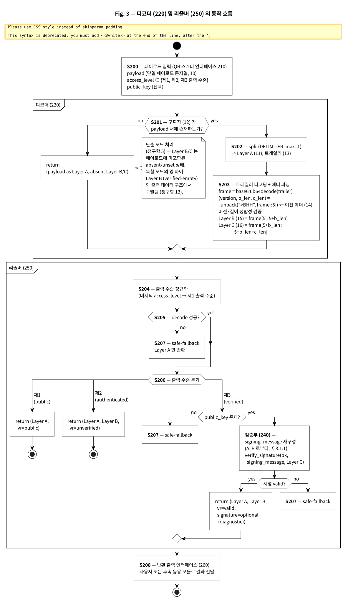
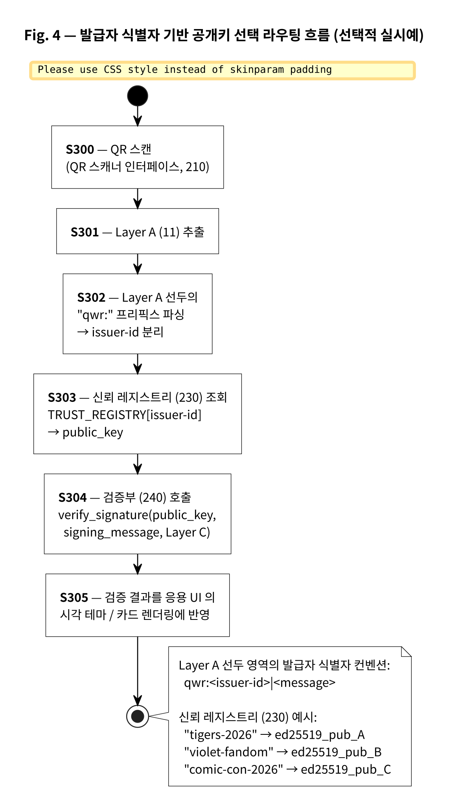
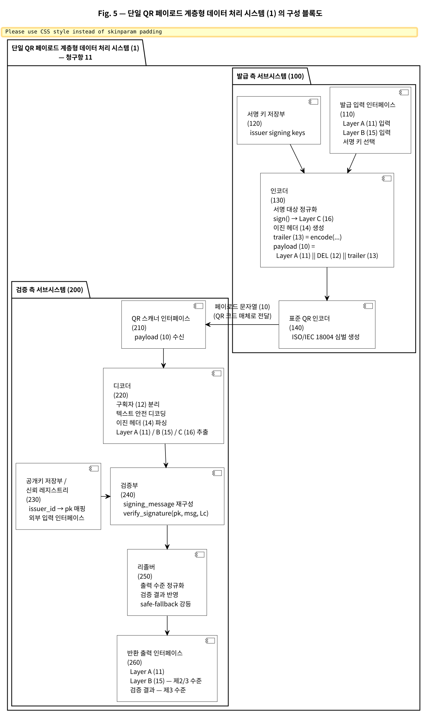
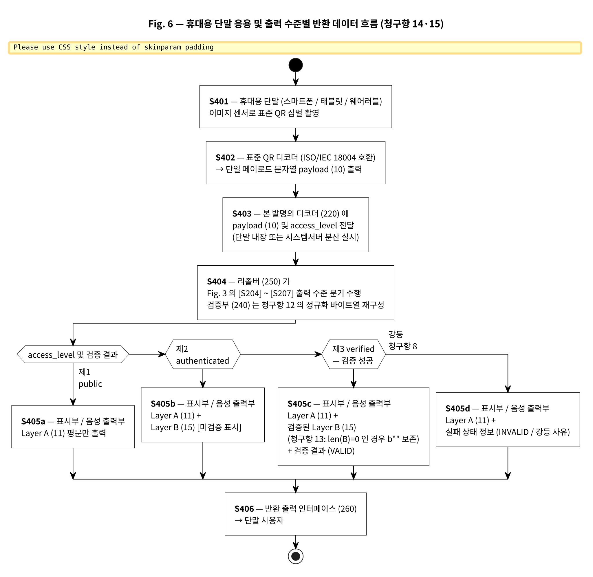

docs/patent/ 전체 (브라우저 + 텍스트 에디터로 동시 열기)| 파일 | 역할 | KEAPS 입력 시 사용 |
|---|---|---|
| qoverwrap-kipo-application-draft.md | KIPO §42 출원서 본문 (서지·명세서·청구범위·요약서·도면 목록 완전판) | 주 입력 소스 — 섹션별 KEAPS 필드에 1:1 복사 |
| spec-draft.md | upstream 마스터 (작업 이력 §12 포함, 18차 라운드 전체 기록) | 참조용 — 청구항 뒷받침 근거 §9.0 매핑 표 확인 |
| keaps-submission-guide.md | KEAPS 입력 절차 + 청구항 인용 형식 변환표 | §3.1 sed 일괄 변환 명령 (본 가이드 §6 도 참조) |
| bibliographic-form.md | 서지사항 양식 (출원인·발명자·대리인·심사청구 항목) | KEAPS §서지사항 필드 입력 시 참조 |
| prior-art-survey.md | 선행기술 조사 결과 (12개월 재조사 포함) | OA 단계 의견서 작성 시 인용 자료 |
| remediation-plan-2026-05-13.md | 거절이유 자체 비평 + 보완계획 | 참조용 — 청구항 좁힘 근거 |
| oa-response-defense-memo.md | 청1 단독 진보성 거절 대비 fallback 청구항 1'·1'' 후보 | OA 발부 시 의견서 작성 출발점 |
| grace-period-exception-section-30.md | §30 공지예외 적용 자료 (GitHub 공개 저장소 공지 → §29(1) 신규성 보전) | 출원과 동시 — KEAPS "공지예외 적용 주장" 체크 + 증명서류 첨부 |
| evidence/git-commit-log.txt | 전체 commit log (공지 시점 증명, 39 commits) | §30 증명서류 (PDF 변환 후 첨부) |
| evidence/github-repo-metadata.json | 저장소 메타데이터 (PUBLIC 상태, 생성일자, 소유자) | §30 증명서류 (PDF 변환 후 첨부) |
| figures/rendered/fig{1~6}_*.{png,pdf,svg} | 출원 도면 6장 (BW, 300dpi, PlantUML 자동 생성) | KEAPS §도면 첨부 (PNG 또는 PDF) |
Fig. 1 ~ Fig. 6, KIPO 흑백/300dpi, PlantUML 자동 생성. 18차 라운드 deprecation warning 제거 완료.






fig{5,6a,6b,6c,7a,7b}_clean.png) 는 16차 라운드 도면 재번호화 이전 명명으로, 본 출원에 미첨부 (마케팅·내부 검토용).
| 청구항 | 유형 | 인용 | 핵심 내용 |
|---|---|---|---|
| 청1 | 방법 독립 | - | 단일 QR 페이로드 생성 방법 · Layer A 선두 평문 + 구획자 + base64 trailer + 5바이트 헤더 + Ed25519 서명 |
| 청2 | 방법 독립 | - | 단일 QR 페이로드 검증 방법 · 단순/복합 모드 자동 판별 + 외부 시스템 호출 없는 오프라인 검증 |
| 청3 | 방법 종속 | 청1 | 이진 헤더 5바이트 (1+2+2) + base64 인코딩 구체화 |
| 청4 | 방법 종속 | 청1 | 구획자 = 줄바꿈 문자로 둘러싸인 고유 문자열 |
| 청5 | 방법 종속 | 청2 | 단순 모드 처리는 트레일러 디코딩·서명 검증 미호출 |
| 청6 | 방법 종속 | 청2 | Ed25519 알고리즘 + 신뢰 레지스트리 + Layer C 길이 64바이트 검증 |
| 청7 | 방법 종속 | 청2 | 리졸버 3단 출력 수준 (제1/제2/제3) |
| 청8 | 방법 종속 | 청7 | 안전 강등 정책 (구조 파싱 실패 그룹 / 검증 실패 그룹 2그룹 분리) |
| 청9 | 방법 종속 | 청2 | 발급자 식별자 → 공개키 라우팅 |
| 청10 | CRM | 청1~9, 12~14 | 컴퓨터 판독 가능 저장 매체 |
| 청11 | 시스템 독립 | - | 1 이상의 프로세서 + 메모리 + 인코더/디코더/검증부/리졸버 구성 |
| 청12 | 방법 종속 | 청2 | Canonical signing message 정규화 바이트열 |
| 청13 | 방법 종속 | 청7 | Verified-empty Layer B 보존 (영 바이트 검증 vs 부재 구별) |
| 청14 | 방법 종속 | 청2 | 휴대용 단말 응용 + 시각·청각·촉각 출력 |
| 청15 | 시스템 종속 | 청11 | Canonical + verified-empty 시스템 결합 |
oa-response-defense-memo.md 의 fallback 청구항 1'/1'' 후보로 대비.
github.com/rae-hugo-kim/QoverRap) 에 2026-04-14 부터 공개되어 있다. 출원 시 §30 적용 주장 없으면 본 저장소 자체가 §29(1) 신규성 부인 근거가 되어 거절 사유가 됨.
적용 조항: 특허법 §30(1)1호 (출원인 자신의 공지) · 공지일로부터 12개월 이내 출원 시 신규성·진보성 부인 안 됨
| 항목 | 내용 |
|---|---|
| 공지 매체 | GitHub PUBLIC 저장소 |
| URL | https://github.com/rae-hugo-kim/QoverRap |
| 공지 시각 | 2026-04-14 14:21 KST (저장소 생성·첫 commit) |
| 공지자 = 출원인 | Sangrae Kim (김상래), 이메일 rae.kim@aipq.kr |
| 동일성 증명 | LICENSE 저작권 표시 + pyproject.toml authors + 모든 commit author email 일관성 |
| 12개월 기한 | 2027-04-14 이전 출원 필수 (현재 약 11개월 여유) |
web.archive.org/save/https://github.com/rae-hugo-kim/QoverRap 요청1특허고객번호 로그인 → "특허 출원" 메뉴 선택
2서지사항 입력
3명세서 입력
| KEAPS 필드 | application-draft.md 섹션 |
|---|---|
| 발명의 명칭 | 【발명의 명칭】 §0001 |
| 기술분야 | 【기술분야】 §0002~§0003 |
| 배경기술 | 【발명의 배경이 되는 기술】 §0004~§0005 |
| 선행기술문헌 | 【선행기술문헌】 §0006~§0017 (특허 5건 + 비특허 5건) |
| 해결하려는 과제 | 【해결하고자 하는 과제】 §0018~§0023 |
| 과제의 해결수단 | 【과제의 해결 수단】 §0024~§0029 |
| 발명의 효과 | 【발명의 효과】 §0030~§0035 |
| 도면의 간단한 설명 | 【도면의 간단한 설명】 §0036~§0041 + §부호의 설명 §0074~§0102 |
| 발명을 실시하기 위한 구체적인 내용 | 【발명을 실시하기 위한 구체적인 내용】 §0042~§0073 |
4청구범위 입력
5요약서 입력
6도면 첨부
7출원료 결제 → 출원번호 수령
KEAPS 표준 인용 형식 "제 N 항" 으로 변환. application-draft.md 의 본문 사본에 적용 후 KEAPS 에 복사.
# sed 일괄 변환 (역순 — 두 자리 → 한 자리 순)
sed -i \
-e 's/청구항 15/제 15 항/g' \
-e 's/청구항 14/제 14 항/g' \
-e 's/청구항 13/제 13 항/g' \
-e 's/청구항 12/제 12 항/g' \
-e 's/청구항 11/제 11 항/g' \
-e 's/청구항 10/제 10 항/g' \
-e 's/청구항 9/제 9 항/g' \
-e 's/청구항 8/제 8 항/g' \
-e 's/청구항 7/제 7 항/g' \
-e 's/청구항 6/제 6 항/g' \
-e 's/청구항 5/제 5 항/g' \
-e 's/청구항 4/제 4 항/g' \
-e 's/청구항 3/제 3 항/g' \
-e 's/청구항 2/제 2 항/g' \
-e 's/청구항 1/제 1 항/g' \
/tmp/qoverwrap-claims.md| 항목 | 금액 (예상) | 비고 |
|---|---|---|
| 출원료 본료 | 약 46,000원 | 개인 출원 |
| 청구항 추가료 (15개) | 약 30,000~50,000원 | 청구항당 약 4,000~10,000원, 정확한 금액은 KIPO 수수료표 확인 |
| 출원 합계 | 약 80,000~100,000원 | 심사청구 미포함 |
| 심사청구료 (선택) | 약 143,000원 | 출원과 동시 청구 권장 |
| 우선심사 신청 (선택) | 약 200,000원 | 등록 단축 (1년 → 6개월) |
공식 수수료 (변동 가능): https://www.kipo.go.kr/ → "수수료 안내"
출원 후 평균 1~2년 내 심사관 OA 발부 가능. 60일 이내 의견서 + 보정서 제출 필수.
5d6c1e6 이후 변경 없음)web.archive.org/save/...) 요청 → URL 기록